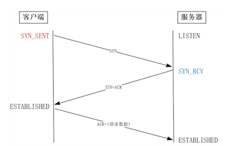
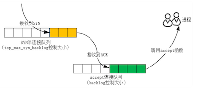
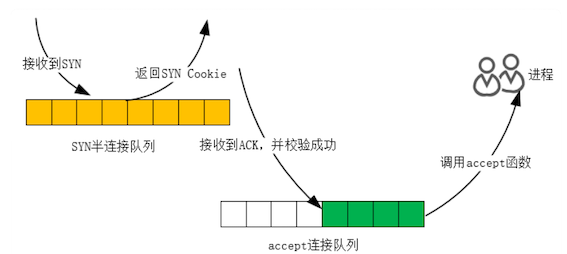
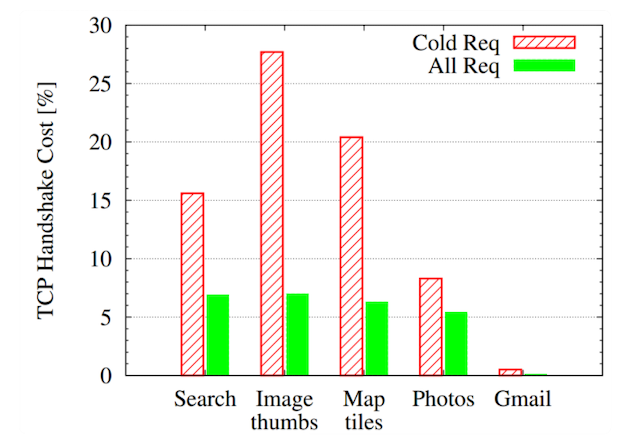
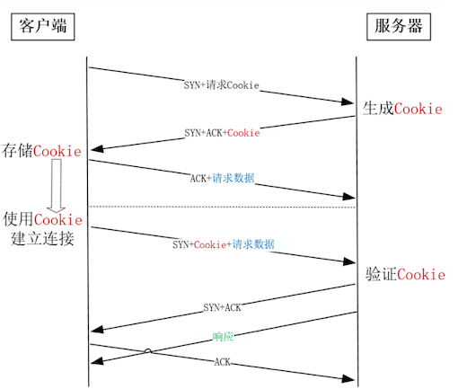

第三节 提升TCP三次握手的性能
TCP 是一个可以双向传输的全双工协议，所以需要经过三次握手才能建立连接。
三次握手在一个 HTTP 请求中的平均时间占比在 10% 以上，在网络状况不佳、高并发或者遭遇 SYN 泛洪攻击等场景中，如果不能正确地调整三次握手中的参数，就会对性能有很大的影响。
TCP 协议是由操作系统实现的，调整 TCP 必须通过操作系统提供的接口和工具，这就需要理解 Linux 是怎样把三次握手中的状态暴露给我们，以及通过哪些工具可以找到优化依据，并通过哪些接口修改参数。
1、客户端的优化
客户端和服务器都可以针对三次握手优化性能。相对而言，主动发起连接的客户端优化相对简单一些，而服务器需要在监听端口上被动等待连接，并保存许多握手的中间状态，优化方法更为复杂一些。
三次握手建立连接的首要目的是同步序列号。
只有同步了序列号才有可靠的传输，TCP 协议的许多特性都是依赖序列号实现的，比如流量控制、消息丢失后的重发等等，这也是三次握手中的报文被称为 SYN 的原因，因为 SYN 的全称就叫做 Synchronize Sequence Numbers。
三次握手虽然由操作系统实现，但它通过连接状态把这一过程暴露给了我们，我们来细看下过程中出现的 3 种状态的意义。
客户端发送 SYN 开启了三次握手，此时在客户端上用 netstat 命令可以看到连接的状态是 SYN_SENT（把刚 SYN 发送出去）。
tcp 0 1 172.16.20.227:39198 129.28.56.36:81 SYN_SENT
客户端在等待服务器回复的 ACK 报文。正常情况下，服务器会在几毫秒内返回 ACK，但如果客户端迟迟没有收到 ACK 会怎么样呢？
客户端会重发 SYN，重试的次数由 tcp_syn_retries 参数控制，默认是 6 次：。
net.ipv4.tcp_syn_retries = 6
第 1 次重试发生在 1 秒钟后，接着会以翻倍的方式在第 2、4、8、16、32 秒共做 6 次重试，最后一次重试会等待 64 秒，如果仍然没有返回 ACK，才会终止三次握手。所以，总耗时是 1+2+4+8+16+32+64=127 秒，超过 2 分钟。
如果这是一台有明确任务的服务器，你可以根据网络的稳定性和目标服务器的繁忙程度修改重试次数，调整客户端的三次握手时间上限
比如内网中通讯时，就可以适当调低重试次数，尽快把错误暴露给应用程序。

2、服务器端的优化
2-1 SYN 队列溢出优化
当服务器收到 SYN 报文后，服务器会立刻回复 SYN+ACK报文，既确认了客户端的序列号，也把自己的序列号发给了对方。
此时，服务器端出现了新连接，状态是 SYN_RCV（RCV 是 received 的缩写）。
这个状态下，服务器必须建立一个 SYN 半连接队列来维护未完成的握手信息，当这个队列溢出后，服务器将无法再建立新连接。

新连接建立失败的原因有很多，怎样获得由于队列已满而引发的失败次数呢？netstat -s 命令给出的统计结果中可以得到。
# netstat -s | grep "SYNs to LISTEN"
1192450 SYNs to LISTEN sockets dropped
这里给出的是队列溢出导致 SYN 被丢弃的个数。注意这是一个累计值，如果数值在持续增加，则应该调大 SYN 半连接队列。
修改队列大小的方法，是设置 Linux 的 tcp_max_syn_backlog参数：。
net.ipv4.tcp_max_syn_backlog = 1024
2-2 syncookies不使用 SYN 队列
如果 SYN 半连接队列已满，只能丢弃连接吗？
并不是这样，开启 syncookies 功能就可以在不使用 SYN 队列的情况下成功建立连接。
syncookies 是这么做的：服务器根据当前状态计算出一个值，放在己方发出的 SYN+ACK 报文中发出，当客户端返回 ACK 报文时，取出该值验证，如果合法，就认为连接建立成功，如下图所示。

Linux 下怎样开启 syncookies 功能呢？
修改 tcp_syncookies 参数即可，其中值为 0 时表示关闭该功能，2 表示无条件开启功能，而 1 则表示仅当 SYN 半连接队列放不下时，再启用它。
由于 syncookie 仅用于应对 SYN 泛洪攻击（攻击者恶意构造大量的 SYN 报文发送给服务器，造成 SYN 半连接队列溢出，导致正常客户端的连接无法建立），这种方式建立的连接，许多 TCP 特性都无法使用。所以，应当把tcp_syncookies设置为 1，仅在队列满时再启用。
net.ipv4.tcp_syncookies = 1
当客户端接收到服务器发来的 SYN+ACK 报文后，就会回复 ACK 去通知服务器，同时己方连接状态从 SYN_SENT 转换为 ESTABLISHED，表示连接建立成功。服务器端连接成功建立的时间还要再往后，到它收到 ACK 后状态才变为 ESTABLISHED。
2-3 tcp_synack_retries
如果服务器没有收到 ACK，就会一直重发 SYN+ACK 报文。当网络繁忙、不稳定时，报文丢失就会变严重，此时应该调大重发次数。反之则可以调小重发次数。修改重发次数的方法是，调整 tcp_synack_retries 参数：
net.ipv4.tcp_synack_retries = 5
tcp_synack_retries的默认重试次数是 5 次，与客户端重发 SYN 类似，它的重试会经历 1、2、4、8、16 秒，最后一次重试后等待 32 秒，若仍然没有收到 ACK，才会关闭连接，故共需要等待 63 秒。
2-4 accept 队列溢出优化
服务器收到 ACK 后连接建立成功，此时，内核会把连接从 SYN 半连接队列中移出，再移入 accept 队列，等待进程调用 accept 函数时把连接取出来。
如果进程不能及时地调用 accept 函数，就会造成 accept 队列溢出，最终导致建立好的 TCP 连接被丢弃。
实际上，丢弃连接只是 Linux 的默认行为，我们还可以选择向客户端发送 RST 复位报文，告诉客户端连接已经建立失败。打开这一功能需要将 tcp_abort_on_overflow 参数设置为 1。
net.ipv4.tcp_abort_on_overflow = 0
通常情况下，应当把 tcp_abort_on_overflow 设置为 0，因为这样更有利于应对突发流量。
举个例子，当 accept 队列满导致服务器丢掉了 ACK，与此同时，客户端的连接状态却是 ESTABLISHED，进程就在建立好的连接上发送请求。只要服务器没有为请求回复 ACK，请求就会被多次重发。如果服务器上的进程只是短暂的繁忙造成 accept 队列满，那么当 accept 队列有空位时，再次接收到的请求报文由于含有 ACK，仍然会触发服务器端成功建立连接。
所以，tcp_abort_on_overflow 设为 0 可以提高连接建立的成功率，只有你非常肯定 accept 队列会长期溢出时，才能设置为 1 以尽快通知客户端。
那么，怎样调整 accept 队列的长度呢？
listen 函数的 backlog 参数就可以设置 accept 队列的大小。事实上，backlog 参数还受限于 Linux 系统级的队列长度上限，当然这个上限阈值也可以通过 somaxconn 参数修改。
net.core.somaxconn = 128
当下各监听端口上的 accept 队列长度可以通过ss -ltn 命令查看，但 accept 队列长度是否需要调整该怎么判断呢？
还是通过 netstat -s命令给出的统计结果，可以看到究竟有多少个连接因为队列溢出而被丢弃。
# netstat -s | grep "listen queue"
14 times the listen queue of a socket overflowed
如果持续不断地有连接因为 accept 队列溢出被丢弃，就应该调大 backlog 以及 somaxconn 参数。
3、 TFO 技术如何绕过三次握手？
如何绕过三次握手发送数据
三次握手建立连接造成的后果就是，HTTP 请求必须在一次 RTT（Round Trip Time，从客户端到服务器一个往返的时间）后才能发送，Google 对此做的统计显示，三次握手消耗的时间，在 HTTP 请求完成的时间占比在 10% 到 30% 之间。

因此，Google 提出了 TCP fast open 方案（简称TFO），客户端可以在首个 SYN 报文中就携带请求，这节省了 1 个 RTT 的时间。
3-1 TFO 具体是怎么实现的
为了让客户端在 SYN 报文中携带请求数据，必须解决服务器的信任问题。因为此时服务器的 SYN 报文还没有发给客户端，客户端是否能够正常建立连接还未可知，但此时服务器需要假定连接已经建立成功，并把请求交付给进程去处理，所以服务器必须能够信任这个客户端。
3-2 TFO 到底怎样达成这一目的呢？
它把通讯分为两个阶段，第一阶段为首次建立连接，这时走正常的三次握手，但在客户端的 SYN 报文会明确地告诉服务器它想使用 TFO 功能，这样服务器会把客户端 IP 地址用只有自己知道的密钥加密（比如 AES 加密算法），作为Cookie 携带在返回的 SYN+ACK 报文中，客户端收到后会将 Cookie 缓存在本地。
之后，如果客户端再次向服务器建立连接，就可以在第一个 SYN 报文中携带请求数据，同时还要附带缓存的 Cookie。很显然，这种通讯方式下不能再采用经典的“先 connect 再 write 请求”这种编程方法，而要改用 sendto 或者 sendmsg 函数才能实现。
服务器收到后，会用自己的密钥验证 Cookie 是否合法，验证通过后连接才算建立成功，再把请求交给进程处理，同时给客户端返回 SYN+ACK。
虽然客户端收到后还会返回 ACK，但服务器不等收到 ACK 就可以发送 HTTP 响应了，这就减少了握手带来的 1 个 RTT 的时间消耗。

当然，为了防止 SYN 泛洪攻击，服务器的 TFO 实现必须能够自动化地定时更新密钥。
3-3 Linux 下怎么打开 TFO 功能呢
这要通过 tcp_fastopen 参数。由于只有客户端和服务器同时支持时，TFO 功能才能使用，所以 tcp_fastopen 参数是按比特位控制的。
其中，第 1 个比特位为 1 时，表示作为客户端时支持 TFO；第 2 个比特位为 1 时，表示作为服务器时支持 TFO，所以当 tcp_fastopen的值为 3 时（比特为 0x11）就表示完全支持 TFO 功能。
net.ipv4.tcp_fastopen = 3
4、本节小结
当客户端通过发送 SYN 发起握手时，
- 可以通过
tcp_syn_retries控制重发次数。 - 当服务器的 SYN 半连接队列溢出后，SYN 报文会丢失从而导致连接建立失败。我们可以通过
netstat -s给出的统计结果判断队列长度是否合适，进而通过tcp_max_syn_backlog参数调整队列的长度。 - 服务器回复 SYN+ACK 报文的重试次数由
tcp_synack_retries参数控制，网络稳定时可以调小它。 - 为了应对 SYN 泛洪攻击，应将
tcp_syncookies参数设置为 1，它仅在 SYN 队列满后开启 syncookie 功能，保证连接成功建立。
服务器收到客户端返回的 ACK 后
- 会把连接移入 accept 队列，等待进程调用 accept 函数取出连接。如果 accept 队列溢出，默认系统会丢弃 ACK，也可以通过
tcp_abort_on_overflow参数用 RST 通知客户端连接建立失败。 - 如果 netstat 统计信息显示，大量的 ACK 被丢弃后，可以通过 listen 函数的 backlog 参数和 somaxconn 系统参数提高队列上限。
TFO 技术绕过三次握手，使得 HTTP 请求减少了 1 个 RTT 的时间。Linux 下可以通过 tcp_fastopen 参数开启该功能。
长连接优化， 减少time_wait时长，复用time_wait连接